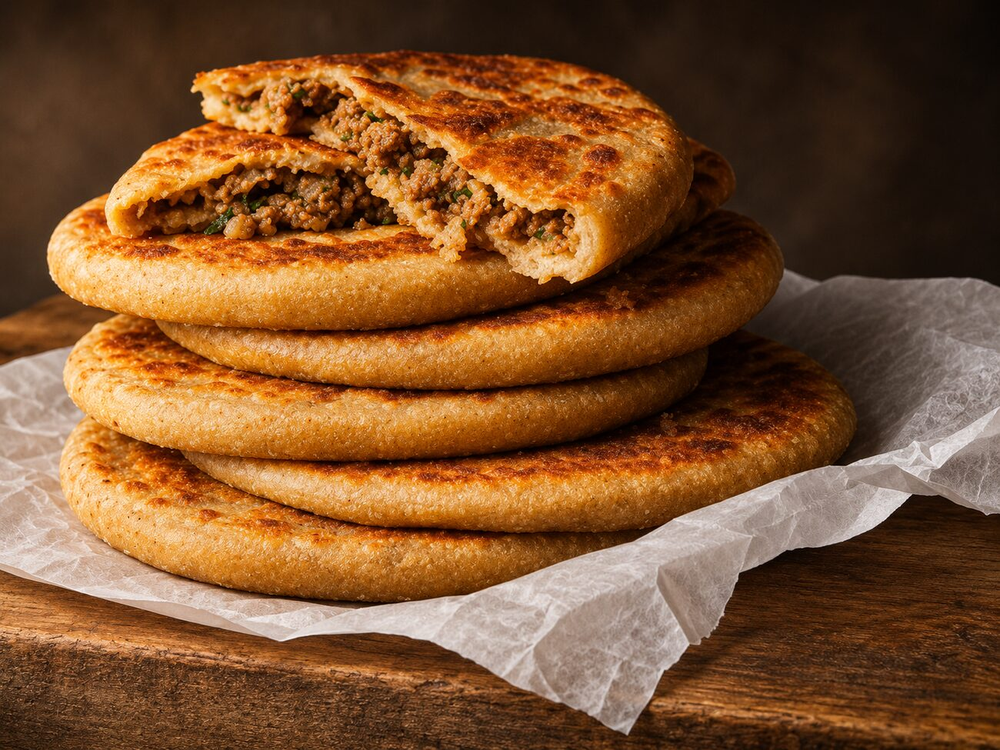

Tomball, Texas · Pakistani & Mediterranean
Hot off
the tawa.
Griddled parathas, cheesy rolls and slow-cooked favorites from the Omm Ali food truck.

12010 Spring Cypress Rd · Tomball(267) 469-8680
From the menu
Tomball, Texas · Pakistani & Mediterranean
Griddled parathas, cheesy rolls and slow-cooked favorites from the Omm Ali food truck.

From the menu